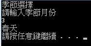

流程控制
if else應用
|
上圖為右邊程式，執行的流程，讓學習們， 熟悉流程與IF ELSE的使用。 |
void main() { printf("請輸入成績"); scanf("%d",&stu); scanf("%d",&stu);//輸入成績 if(stu>=60) printf("為true\n");//如果成績大於六十分，印出true else printf("為false\n");//如果成績小於六十分，印出false } P.S.有沒有覺得，為什麼在IF ELSE裡不用括號， 因為當只有一個陳述式，可省略。 |
輸出結果: |
switch應用
|
上圖為右邊程式，執行的流程，讓學習們， 熟悉流程與SWITCH的使用。 |
void main() { printf("季節選擇\n"); int season;//宣告season的變數 printf("請輸入季節月份\n"); scanf("%d",&season);//輸入季節月份 switch(season)//引入變數 { case 7://season為7，印出夏天 printf("夏天\n"); break; case 3://season為3，印出春天 printf("春天\n"); break; case 10://season為10，印出秋天 printf("秋天\n"); break; case 12://season為12，印出冬天 printf("冬天\n"); break; default://season為其他數字，印出請重新輸入 printf("請輸入正確季節月份\n"); } |
輸出結果:  |